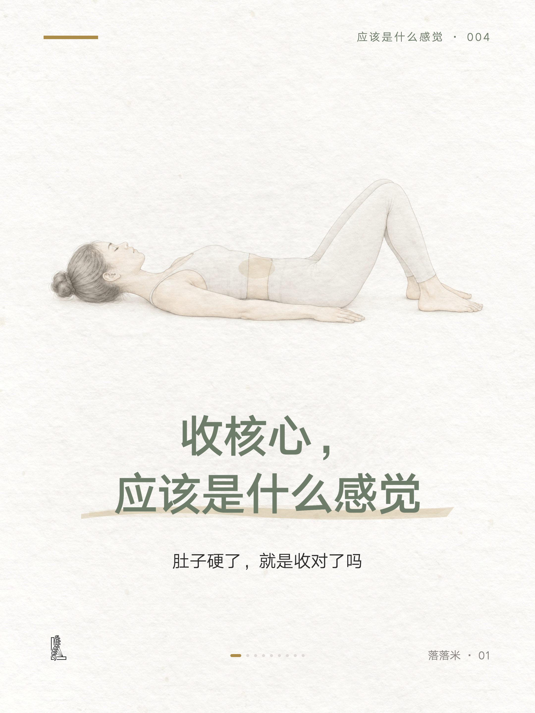
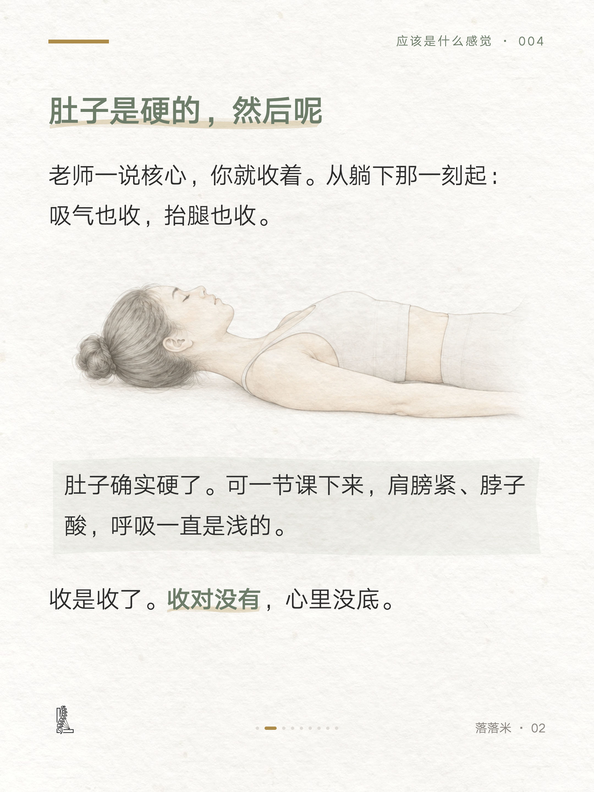
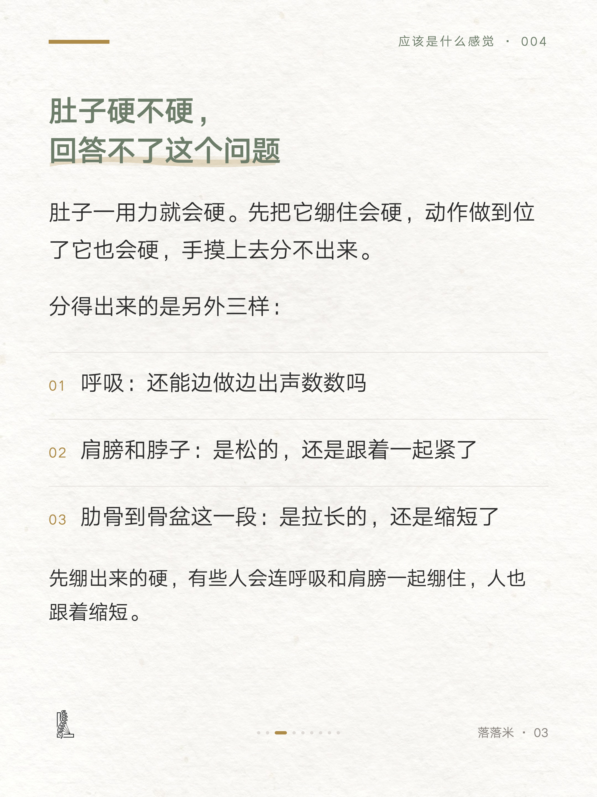
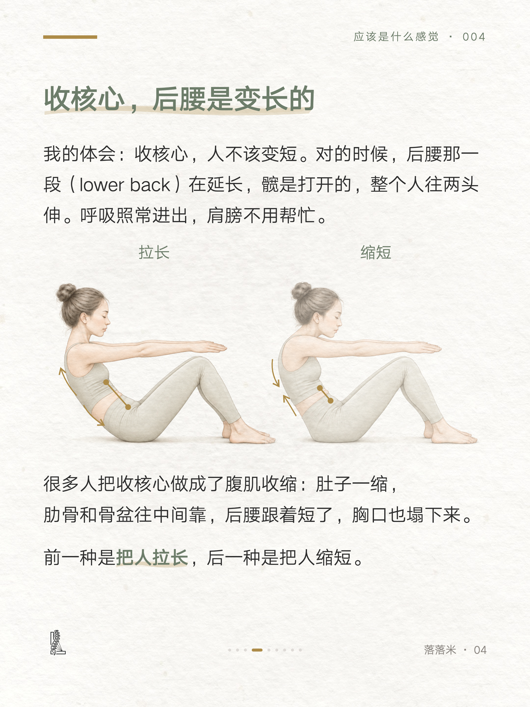
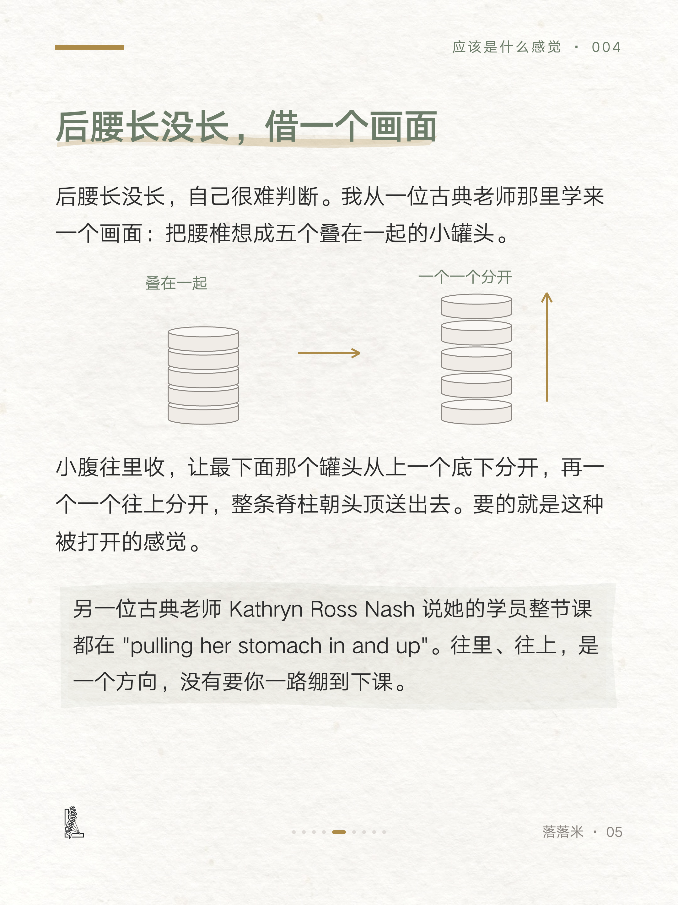
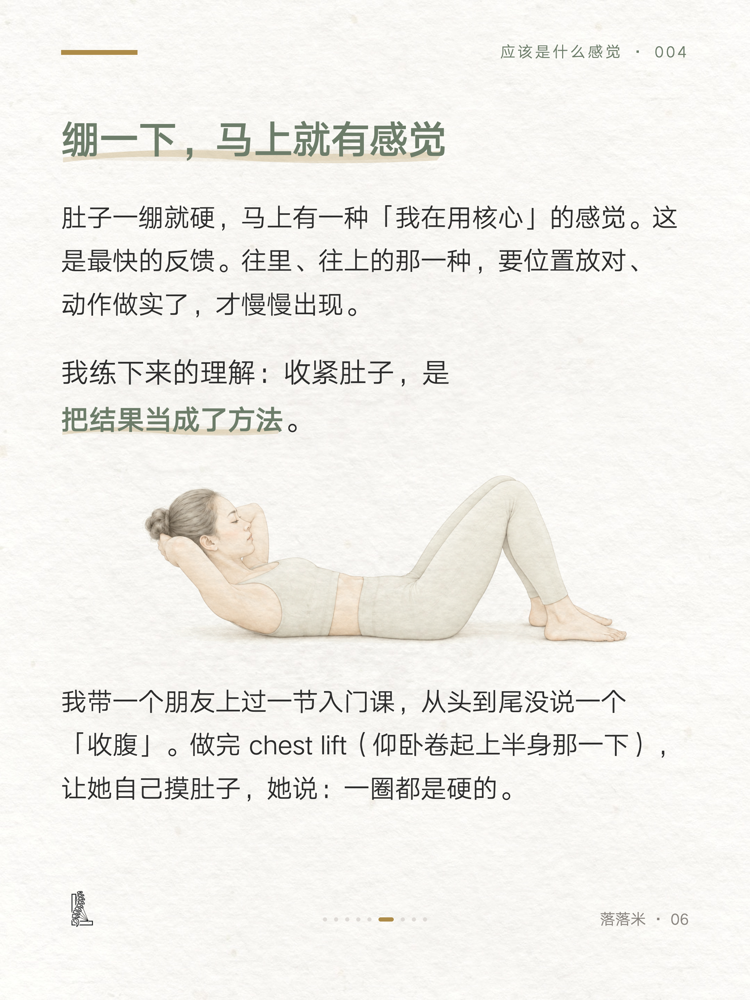
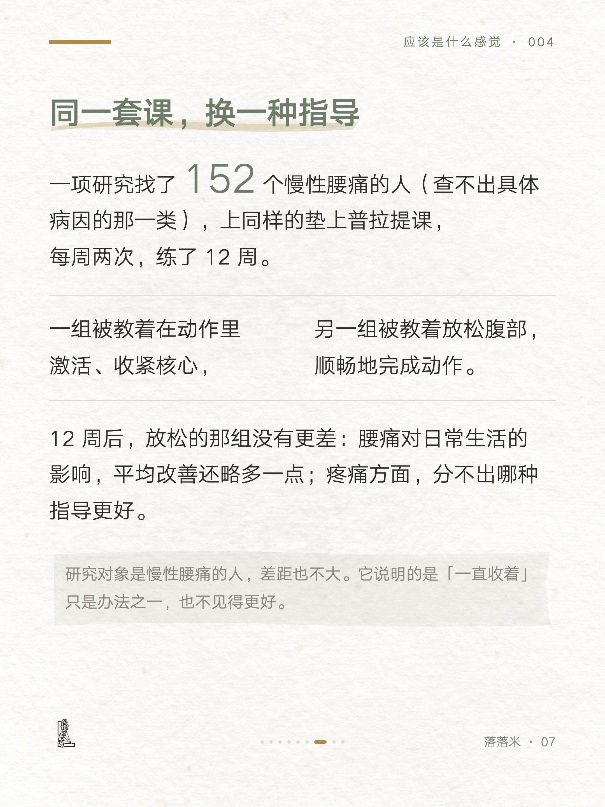
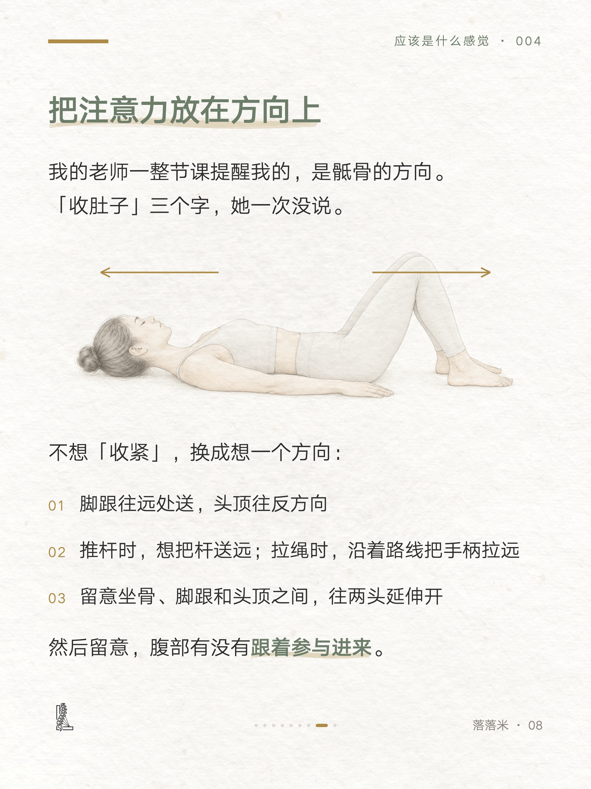
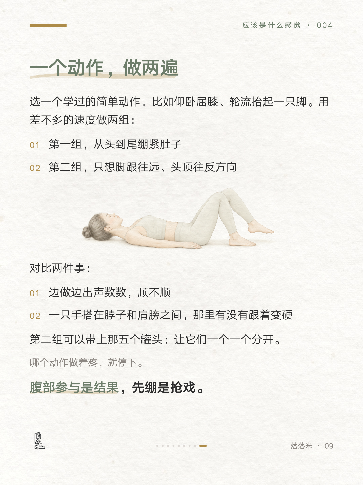

应该是什么感觉 #004
普拉提收核心，应该是什么感觉

1 / 9

2 / 9

3 / 9

4 / 9

5 / 9

6 / 9

7 / 9

8 / 9

9 / 9
← 左右滑动浏览全部卡片 →
老师一说核心就收着，肚子是硬的，可收对没有，心里没底。
肚子硬不硬其实回答不了这个问题：先绷住会硬，动作做到位了也会硬。我会看另外三样——呼吸还顺不顺，肩膀脖子有没有跟着紧，肋骨到骨盆这一段是拉长的还是缩短的。
我的体会是：收核心，人不该变短，后腰那一段是在延长的，髋是打开的。很多人把它做成了腹肌收缩，人就缩短了。古典老师说的收，是一个方向。
有一项研究也测过：同样的垫上课练 12 周，被教着放松腹部、顺畅完成动作的那组，没有比一直收紧的那组差。（研究对象是慢性腰痛的人，差距也不大。）
最后一张有一个做两遍的对照，躺下就能做，一只手就够。